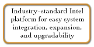
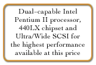
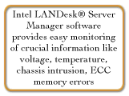
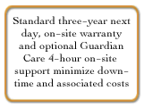

|
Value and Reliability in a Workgroup Server
Workgroup Server Solutions
With its industry-standard platform, the AST Premium® GS offers remarkable performance and reliability
for any growing business or branch office. Whether you're building your first network or you're managing a workgroup
in a Fortune 500 company, the Premium GS will provide you with an easy-to-use, flexible and scalable server solution
- at a price that won't exceed your budget.
Complete Performance For Your Evolving Needs
Thoroughly tested with a wide variety of peripherals, applications and operating systems, the Intel® standard
Premium GS is easily integrated into virtually any network environment. It's also easily replicated for corporate
workgroup networking projects. This ability can greatly simplify your administrative time and costs. As performance
requirements increase, an additional Intel Pentium® II processor can be installed, making AST's outstanding
entry-level server a fully-functional SMP (symmetrical multi-processing) solution.
The Industry's Best Service, Support, and Warranty Programs Make Productivity Easy
AST® fully understands how critical your server is to successfully running your business. Therefore, we stand
behind all of our Premium servers with a standard three-year warranty that includes next-business-day, on-site
response* and a dedicated, toll-free server "hotline" available 24 hours a day, 7 days a week. We also
offer Guardian CareSM an optional, highly responsive support service that includes 4-hour, on-site response from
one of our trained system engineers. Furthermore, AST has a host of customer lifecycle services tailored to meet
the specific needs of your company - regardless of its size. These programs* range from aggressive leasing programs
with technology refresh options to product trade-in and asset recovery services. By keeping your system running
and backing you every step of the way, AST is not just providing high-performance technology, but we're also helping
to grow your business.
Easy Scalability Ensures Unlimited Potential For Growth
The Premium GS is an ideal platform for growing organizations. It provides plenty of options to meet a wide variety
of requirements and adapt to your business needs. You can add a second Intel Pentium II processor, more memory,
mass storage, and I/O to enhance the system's overall effectiveness.
Advanced Technologies Offer High Performance Now- And Beyond
Because this mini-tower chassis is packed with the latest technologies, you can rest assured that it will give
your business the room it needs to grow. To begin with, the Premium GS utilizes the Intel 440LX chipset to ensure
the highest performance from its Intel Pentium II processor. The Premium GS also includes high-speed SDRAM memory.
It's 20% faster than EDO RAM and is ideal for running the most demanding server applications. The Ultra/Wide SCSI
drives offer a level of performance primarily found in servers at twice the price. Intel EtherExpress™ 10/100 Fast
Ethernet is also included for outstanding performance. This feature-rich integration means that your network is
maximizing productivity, while minimizing cost.
System Monitoring Software Provides Security, Reliability and Peace of Mind
In order to reduce risk and better manage mission-critical data, the Premium GS has server monitoring features
built right into the system. These include a self-test for the processors and monitoring and logging of critical
subsystems such as memory, fan rotation, system voltages, and drive arrays. In addition, the Premium GS includes
Intel LANDesk Server Manager software to reduce support costs and increase system uptime by remotely monitoring,
diagnosing and controlling the server. Intel LANDesk Server Manager will keep track of crucial information such
as voltage, temperature, chassis intrusion, and ECC memory errors. AST knows that system downtime can negatively
impact your success, so we're doing everything to ensure that your server - and your business - are always running.
*Contiguous U.S. only

Premium GS Resources:
Product information PDF format:
Buying AST
- Business customers can request information on our line of Bravo business desktop computers, Ascentia notebooks, or Manhattan
servers, simply by filling out this on-line form
- Reseller
partners can view sales information on the AST Ovation! web site, the premier reseller
information site on the Internet. Resellers can now view on-line product catalogs, marketing programs, and the
most current news and information available.
Older Models
|




|